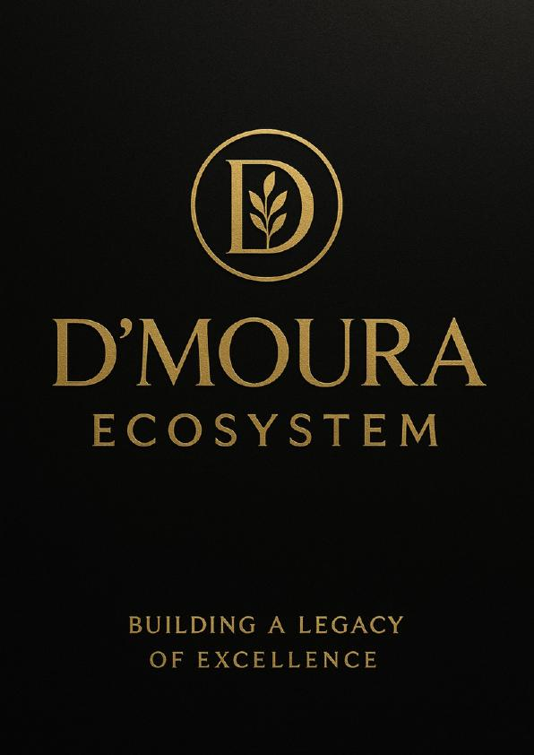

D'Moura Ecosystem
Anderclay Pereira · Dra. Danusa Moura
Modelo de parceria e expansão da clínica: níveis Start / Bronze / Prata / Ouro, identidade de marca, Rewards e suporte Empreenda+. As condições de parceria são tratadas diretamente com a equipe pelo WhatsApp.
Curso associado — Parceria D'Moura Ecosystem
- Módulo 1 — Origem, propósito e identidade da marca
- Módulo 2 — Estrutura do ecossistema e autonomia conectada
- Módulo 3 — Níveis de parceria (Start → Ouro) e retornos
- Módulo 4 — Gestão, marketing e D'Moura Rewards™
- Módulo 5 — Ética, expansão e inteligência coletiva